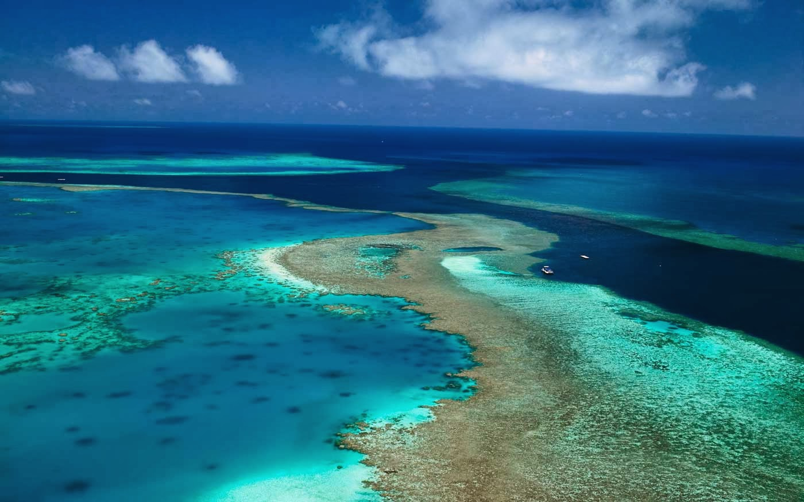

HyperText Markup Language (HTML) adalah bahasa markup standar yang digunakan untuk membuat halaman web.
HTML menyediakan struktur dasar dan konten untuk halaman web dan bekerja sama dengan Cascading Style Sheet
(CSS) untuk presentasi visual halaman web dan JavaScript untuk perilaku interaktif.
Elemen Semantik HTML
Elemeen Semantik HTML adalah elemen-elemen yang memiliki makna atau arti yang spesifik untuk memudahkan
mensin pencari dan pengembang web memahami struktur halaman web. Elemen ini membantu meningkatkan aksesibilitas
dan pengalaman pengguna pada halaman web.
Keajaiban Alam: Great barrier Reef
Great barrier Reef adalah sistem terumbu karang terbesar di dunia, membentang sejauh lebih dari 2.300 kilometer
di sepanjang pantai timur Australia. Terumbu karang ini terdiri dari jutaan polip karang individu yang hidup
bersama dalam simbiosis dengan ganggang fotosintesis. Great barrier Reef adalah rumah bagi berbagai macam kehidupan
laut, termasuk ikan, hiu, penyu, dan terumbu karang.

Great Barrier Reef yang memukau
sayangnya, Great Barrier Reef menghadapi berbagai ancaman, termasuk perubahan iklim, polusi, dan penagkapan ikan
berlebihan. Sangat penting untuk melindungi terumbu karang ini untuk menjaga keanekaragaman hayati laut dan keindahan alam.